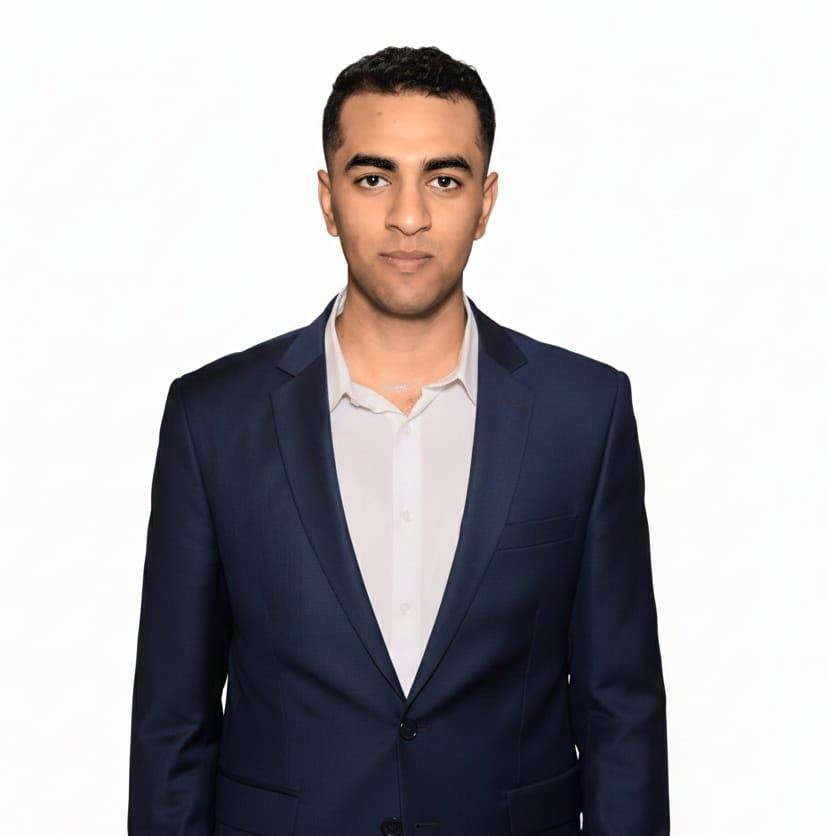

Entry-Level Cybersecurity Engineer
Contact MeMotivated and curious entry-level cybersecurity engineer with a strong interest in penetration testing and ethical hacking. Currently developing foundational skills in network security, Linux systems, and penetration testing tools. Eager to grow through hands-on practice, continuous learning, and certifications.
Oct 2023 – Aug 2027
Department of Secure Information and Digital Forensics Discovery
Aug 2025 – Sept 2025
Email: lloiiioll654@gmail.com
Phone: 01146982915
Location: Banha, Qalyubia, Egypt
LinkedIn: linkedin.com/in/ammar-samy-a7ba5b271